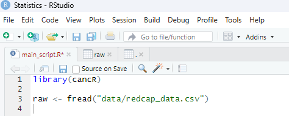

Export data from Redcap
redcap.RmdDefine the export
Open your project in Redcap and find the export tab on the left side

Now create a new report. Here you define which parts of the data in redcap you wish to export.

Give the report a name and choose the name of the project under “Add fields from instrument”. This adds all data from that specific instrument. In this example the project (instrument) is named MAT.

An important field that needs to be checked is that multiple values should be collapsed into one column

Export Redcap data
When a report/export has been defined it will show in the data exports. Select “export data” to export the specified data in that given export.

The format should be semi-colon separated csv.

Next, move the file to the data folder in your statistics folder for the project

Rename the file for brevity, here we name it redcap_df. If multiple datasets are placed here add a date.

Finally, load the data into R using the function fread. The path can be simplified to: “data/redcap_data.csv” as the project file already knows the entire path to the main folder (working directory). Here we assign the data to the object “raw”.
